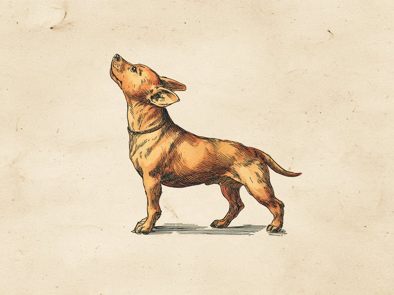

犬の嗅覚は人間の数千万倍とも言われます。その差はどこから生まれるのでしょうか。 A dog's nose can be millions of times more sensitive than a human's. Here's where that difference actually comes from.
嗅覚を感じ取る「センサー」の数がケタ違い
人間の鼻の中には、においを感じ取る嗅覚受容体細胞が500万個ほどあると言われています。それに対して犬は種類にもよりますが2億個以上、ブラッドハウンドのような嗅覚に特化した犬種ではさらに多くの受容体を持つとされています。センサーの数が多いということは、それだけごく微量のにおい分子も逃さず検出できるということ。人間なら気づきもしない薄いにおいの中から、特定の匂いだけを嗅ぎ分けられるのはこのためです。
息を吸う道と、においを分析する道が分かれている
犬の鼻の中は、呼吸のための空気の通り道と、においの分子をじっくり分析するための部屋が一部分かれた構造になっています。息を吐くときには、その一部が鼻の横のスリットから外へ抜けるようになっており、吸い込んだにおいの粒子を鼻腔内に長くとどめておける仕組みになっています。呼吸のたびに新しいにおいの情報を取り込みながら、古い情報の分析時間もしっかり確保できる、なんとも効率的なつくりです。
探知犬として活躍できるのも、この鼻のおかげ
この鋭い嗅覚があるからこそ、麻薬探知犬や爆発物探知犬として犬は世界中で活躍しています。近年ではさらに一歩進んで、がん患者の呼気や尿、皮膚からわずかに漂う匂いの変化を検出する「がん探知犬」の研究も進められており、一部の研究では検査機器に匹敵する精度が報告されているほどです。散歩中にクンクンと熱心に匂いを嗅いでいる姿も、実はものすごい情報処理をしている最中なのかもしれません。
犬の鼻先にある模様(鼻紋)は、人間の指紋のように1頭ごとに異なるパターンを持っています。海外の一部ペット保険会社では、この鼻紋を個体識別に活用する取り組みも行われています。